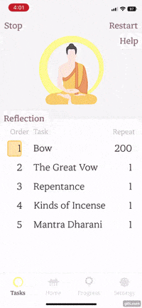
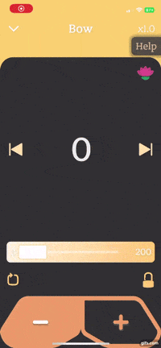
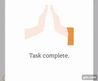
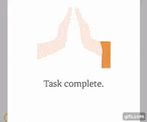

- 여러 유형의 플레이어를 지원합니다. 다른 작업(노란색 및 분홍색)에 대해 다른 테마를 사용할 수 있습니다. 절 카운터 및 라이브 가사 제공.
- 근접 센서는 머리를 감지할 때마다 카운트됩니다. 중복을 방지하고 속도를 유지하기 위해 사용자는 오른쪽 상단 모서리의 연꽃 아이콘이 완전히 로딩된 경우 절 카운트가 활성화됩니다.
- 장치가 근접 센서를 지원하지 않는 경우 설정으로 이동하여 절 타이머를 설정합니다.
- 음악 플레이어가 제목과 재생 버튼의 위치를 계산하고 다음을 적용합니다. 최소화 및 최대화된 플레이어 크기에 위치합니다.
- 음악 플레이어 숨김 기능.
- 음악 플레이어 프로그레스 바 잠금 기능, 반복, 배속.
바라밀 위젯 설명
Music Player




Background Mode

- 백그라운드 작업이 로컬 DB와 상호 작용하여 일과 진행률을 추적합니다.
- 재생, 일시 중지, 다음 또는 이전 노래로 이동, 백그라운드에서 시간 이동.
- 일과의 각 예불의 반복 횟수를 반영합니다.
Live Lyrics
- rxdart를 사용하여 밀리초가 아니라 초가 변경되면 현재 시간을 업데이트하여 성능을 향상시켰습니다.
- 현재 가사로 스크롤합니다.
- 이전, 현재 및 다음 가사의 텍스트 효과 스타일이 다릅니다.
Progress Bar

- Custom paint로 구현.
- 두 종류의 프로그레스 바 지원.
- 사용자 제스처의 중심에 따라 seeker 시간 박스의 위치를 계산합니다.
- Seeker 시간 박스가 화면 양쪽 끝에 넘치지 않도록 구현했습니다.
- 음악 플레이어의 크기에 따라 크기, 축소 및 정렬.
Floating Help Indicator
- 도움말은 모든 화면에서 지원됩니다.
- 도움말 위치를 변경할 수 있습니다.
- 도움말이 활성화되면 하단 네비게이션과 활성된 음악 플레이어를 숨기고 도움말을 전체 화면으로 확장됩니다.
- Custom painter로 화살표를 그리고 애니메이션을 구현했습니다.
Bar Chart

- 일일 일과 진행률은 자정에 저장됩니다. 진행률은 매일 리셋됩니다.
- 연도별 일과 진행률, 진행 횟수를 확인할 수 있습니다.
- 막대그래프의 막대를 탭하면 상세 횟수를 조회할 수 있습니다.
Text Reader

- 성찰일지에 사용자의 감정과 생각을 기록할 수 있습니다.
- 날짜, 일과 완료율 및 해당 날짜의 기록을 조회할 수 있습니다.
- 스크롤 위치에 따라 해당하는 달을 활성화시킵니다.
- 사용자가 왼쪽에서 원하는 월을 누르면 해당 월로 이동합니다.
Dropdown

- 좋아요 +100 자체 제작 플러그인을 사용하여 구현했습니다, cool_dropdown.
Tab Indicator

- 수평 및 수직으로 표시됩니다.
- 자동으로 크기 조정 및 하위 위젯 정렬시킵니다.
Bottom Sheet


- Bottom Sheet의 높이는 내용물의 높이에 따라 조정됩니다.
- 내용물의 높이가 Bottom Sheet 높이보다 큰 경우, 스크롤이 자동으로 적용됩니다.
Local Notification

- 사용자가 일과를 시작할 시간을 설정하고 알림을 받습니다.
Custom Paint Animation

 



- 모든 아이콘, 애니메이션 및 custom paint 디인인.
- 의도적으로 불교의 단순하고, 깨끗하고, 미니멀리즘적하게 디자인했습니다.
Glassmorphism


- 사용자에게 일관성을 제공하기 위해 모든 Floating하는 위젯에 GlassMorphism을 적용했습니다.
※ 브라우저 로드가 완료되면 항목으로 스크롤할 수 있습니다.